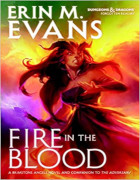
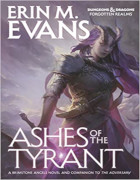
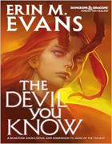
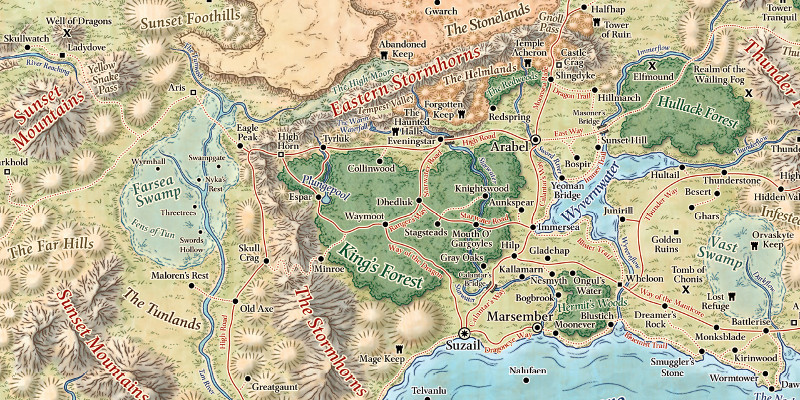

Romans de la série Brimstone Angels
Suite à The Adversary paru dans la série des 6 romans sur la Fracture, Erin Evans s'est lancé en octobre 2014 dans une nouvelle saga de 3 romans publiés par Wizards of the Coast et basés autour de ses deux héros favoris, les sœurs jumelles tieffelines Farideh et Havilar, qui évoluent dans les Royaumes Oubliés.
♦
Fire in the Blood. 1486. Aubrin Crownsilver, sa maîtresse tieffeline Havilar et le père adoptif de cette dernière, le drakéide Mehen, partent dans la forêt Hullack à la recherche du prince Irvel, prince héritier du Cormyr qui a disparu alors qu'il affrontait la Sembie et les shadovars. Malade, l'occultiste [warlock] Farideh, qui possède un pacte avec un cambion nommé Lorcan, est pour sa part contrainte de rester à Suzail avec le Ménestrel Dahl, un ex paladin d'Oghma qui recherche des espions de Shar dans la cité. Quel est le rôle de ce mage de guerre nommé Ilstan ? Avec en prime un petit voyage aux enfers pour rencontrer Tiamat et le retour du dieu Azouth.
Avis : Erin Evans donne selon moi un coup de fraîcheur aux Royaumes Oubliés. Moins connue que R.A. Salvatore, ses intrigues sont plus élaborées et sonnent plus justes, en partie grâce à ses héros plus fragiles et qui n'ont pas un sac sans fond bourré d'objets magiques comme Drizzt et compagnie. Les jeux de pouvoir des enfers sont un régal.
Ashes of the Tyrant. 1486. Ayant appris le décès de son père, Mehen, accompagné de ses deux filles et de Brin, se rend à Djerad Thymar, cité du royaume de Tymanther, la nation des drakéides qui durant la Magespeste en 1385 a échangé sa place avec la région de l'Unther entre Abeir et Toril. C'est sa tante Anala, la nouvelle chef du clan Verthisathurgiesh, qui lui a envoyé Dumuzi pour l'avertir. Ils seront amenés à enquêter sur la mort de plusieurs drakéides. Pendant ce temps Dahl Peredur, sous le contrôle de plusieurs agents du Zentharim, part avec ses frères, sa grand-mère Sessaca et une recrue des Ménestrels nommée Mira à la recherche de la Maîtresse-Bibliothèque. Avec en guest-star un démon maurezhi, le prince noir Graz'zt, une apparition d'Orcus et le retour de Bryseis Kakistos après 27 ans.
Avis : L'auteur met du temps à installer l'ambiance et il faut passer le moitié du livre pour que l'action démarre vraiment. Mais la seconde moitié vaut grandement la peine. Bref, je continue d'être un fan d'Erin Evans.
The Devil you know. 1486. Bryseis Kakistos, qui a pris possession du corps d'Havilar, recherche dans tout Faerûn des héritiers des « Treize de Toril » (les treize premiers occultistes tieffelins à avoir fait un pacte avec le maître des enfers) afin de pouvoir mener un rituel qui lui permettra de se venger d'Asmodée... Le dieu Azouth se réveille petit à petit dans le corps d'Asmodée... Djerad Thymar, menacée par l'autoproclamé Roi-Dieu Gilgeam et son armée alliée à Graz'zt, compte sur Dumuzi, élu du dieu Enlil, pour vaincre les envahisseurs... Farideh, en quête du bâton d'Azouth, caché depuis la mort du dieu et qui a permit à Asmodée d'accéder au rang de divinité, rencontre sa mère Adastreia... Et deux des Treize de Toril toujours vivants, la liche Phrenike et le vicelord Caisys, au milieu de tout cela.
Avis : Avec cet opus l'auteur met un point final à sa série Brimstone Angels. L'intrigue est comme toujours complexe et pas des plus faciles à suivre si l'on a un niveau d'anglais moyen, mais on reste tout de même accroché du début à la fin.
♦
Famille royale du Cormyr en 1486
- Foril Obarskyr ✝. Né en 1409, deuxième fils d'Azoun V et de Nalara Marliir. Il fut roi du Cormyr de 1449 à 1486. Meurt durant son sommeil à 77 ans.
- Jemra Rhindaun ✝. Épouse de Foril. Meurt en 1437 lors d'une tentative d'assassinat contre celui-ci.
- Irvel Obarskyr ✝. Né en 1431, fils de Foril, il était le prince héritier. Il meurt en 1486 lors du siège de Suzail par les shadovars.
- Erzoured Obarskyr. Bâtard du frère de Foril, Emvar, il a le titre de baron et a été élevé comme un frère d'Irvel, mais complote pour devenir roi à sa place.
- Ospra Goldfeather. Épouse d'Irvel.
- Baerovus. Né en 1454, fils d'Irvel. À la mort de son père, il renonce au trône.
- Raedra. Née en 1460, fille d'Irvel. Devient reine du Cormyr, et renonce à se marier avec Brin Crownsilver.
Nobles du Cormyr
Voici quelques unes des principales maisons nobles du Cormyr : Cormaeril, Crownsilver, Goldfeather, Greatgaunt, Huntcrown, Kraliqh, Truesilver.
- Helindra Crownsilver. Matriarche de la famille Crownsilver, c'est la tante de Brin.
- Aubrin Crownsilver. Fils de Halance Crownsilver, qui était tout comme Erzoured un bâtard du frère de Foril, Brin est toutefois selon les lois du Cormyr dans la ligne de succession pour le trône. Il est membre des Ménestrels, vénère Torm, et possède le titre d'Oversword.
- Constancia Crownsilver. Cousine de Brin. Paladin de Torm.
- Pierrick Cormaeril. Battlemaster, membre du conseil de guerre.
- Adenia Goldfeather. Sœur d'Ospra.
- Elmania Greatgaunt. Oversword.
- Gerain Huntcrown. Oversword, membre du conseil de guerre.
Autres personnalités
- Ganrahast Aeiulvana. Magicien royal du Cormyr. 113 ans en 1486.
- Edwin Morahan. Lord Magister, en charge du fonctionnement du royaume.

Principaux clans drakéides de Djerad Thymar en 1486
- Verthisathurgiesh. La nouvelle matriarche de ce clan est Anala, suite à la mort de son frère Pandjed, le père de Mehen.
- Kepeshkmolik. Le patriarche est Narghon, le père de Uadjit, avec laquelle Mehen devait être marié (avant de révéler son attirance pour les hommes). C'est maintenant l'épouse de Arjhani et la mère de Dumuzi.
- Shestandeliath. Le patriarche se nomme Geshthax.
- Ophinshtalajiir. La matriarche en est Kaijia.
- Yrjixtilex. La matriarche est Vardhira. C'est le clan de Kallan, un mercenaire drakéide.
- Fenkenkabradon. Le patriarche en est Ishkhanal. Fenkenkabradon Dokaan est le commandant en chef des Défenseurs de la Lance, l'armée du Tymanther.
- Churirajachi.
- Daardendrien.
- Kanjentellequor.
- Linxakasendalor.
- Prexijandilin.
Le dirigeant du Tymanther a le titre de Vainqueur [Vanquisher] et est élu pour 10 ans. Il est également de fait le chef des adjudicateurs, la milice de Djerad Thymar, capitale du Tymanther. Un patriarche ne peut plus prétendre à ce poste. Depuis 1477, le Vainqueur était Kepeshkmolik Tarhun ✝, mais celui-ci meurt assassiné en 1486. Il est remplacé par Yrjixtilex Kallan.